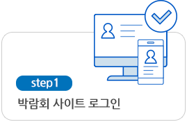
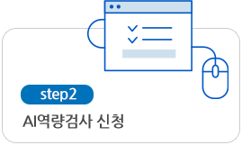
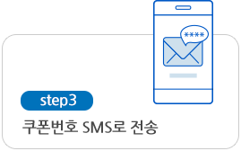
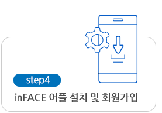
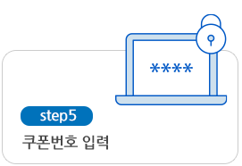
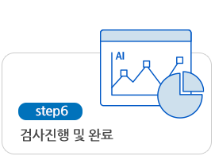
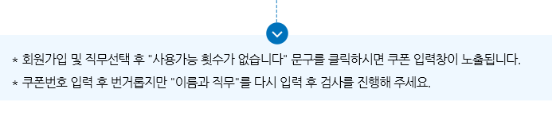
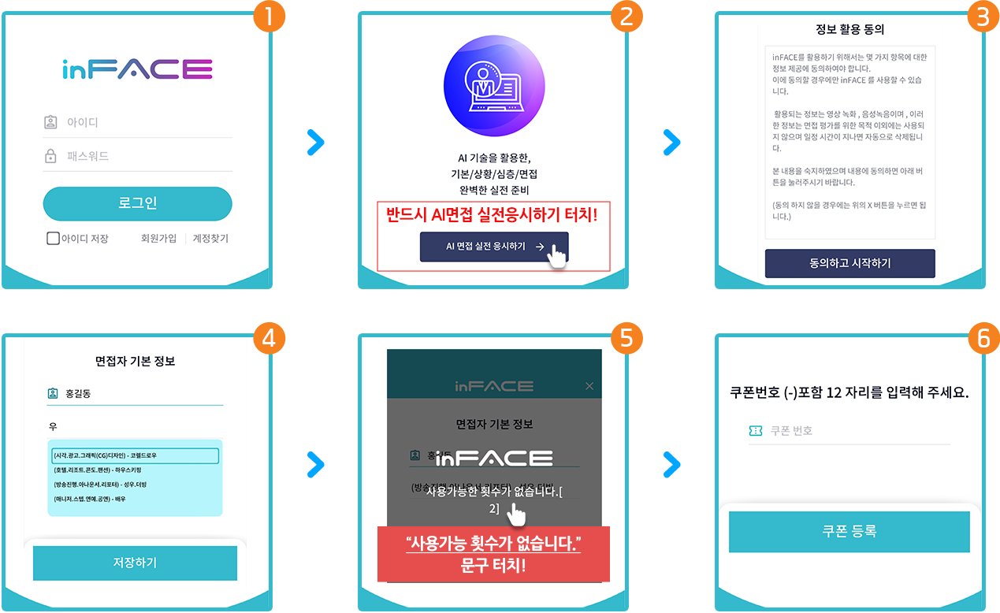

에듀스의 inFACE는 채용의 공정한 기회를 주기위한 기업들의 노력에 부응하기 위해 개발된 AI 채용솔루션 입니다.
inFACE에는 고도화 된 기술이 적용되어 있는데 특히, 여러가지 AI 기술이 포함되어 있습니다.
여기에는 자연어 처리(NLP)와 안면인식기술 (Vision Analysis), 성향분석기술(PI, Personality Insight) 등이 있습니다.
inFACE에는 고도화 된 기술이 적용되어 있는데 특히, 여러가지 AI 기술이 포함되어 있습니다.
여기에는 자연어 처리(NLP)와 안면인식기술 (Vision Analysis), 성향분석기술(PI, Personality Insight) 등이 있습니다.
면접평가
인공지능 NLP(Natural Language Processing)
기술을 채용, AI면접관이 응시자 답변 내용을
분석하여 역량을 평가합니다. 또한 Vision Analysis,
Voice Analysis, Verbal Analysis등을 통해
응시자의
역량, 태도 등을 분석합니다.
역량, 태도 등을 분석합니다.
성향평가
인공지능 PI(Personality Insight) 기술을 통해
정밀한 문항으로 구성된 성향평가를 토대로
응시자의 성향을 평가하게 됩니다. 이러한 성향을 바탕으로 AI면접관이 적절한 질문을 선택합니다.
응시자의 성향을 평가하게 됩니다. 이러한 성향을 바탕으로 AI면접관이 적절한 질문을 선택합니다.







※ 발급된 쿠폰이 24시간 이내 사용되지 않은 경우, 회수되어 사용할 수 없습니다.
AI 역량검사 (In FACE) 쿠폰 입력방법
